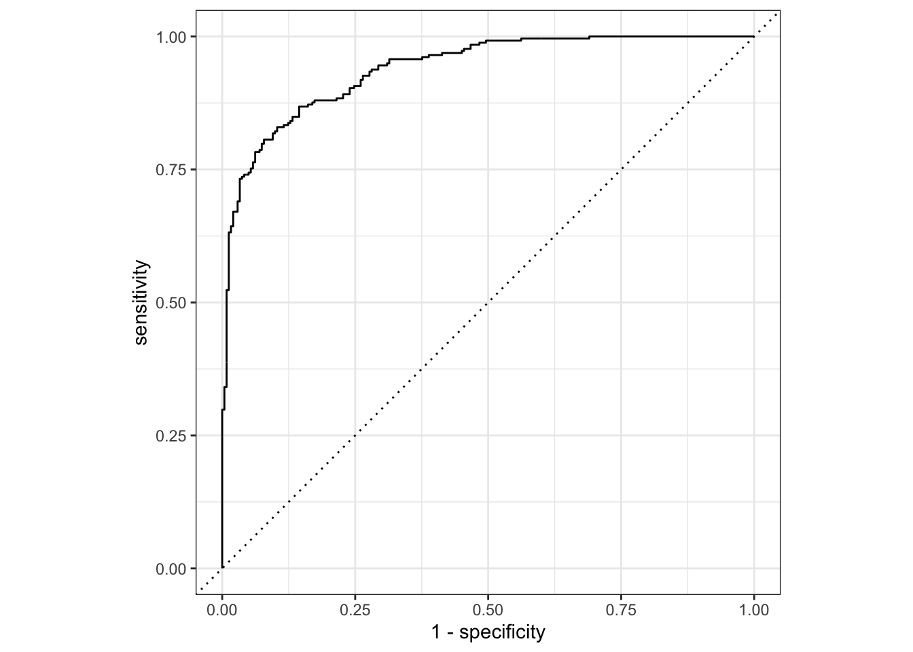
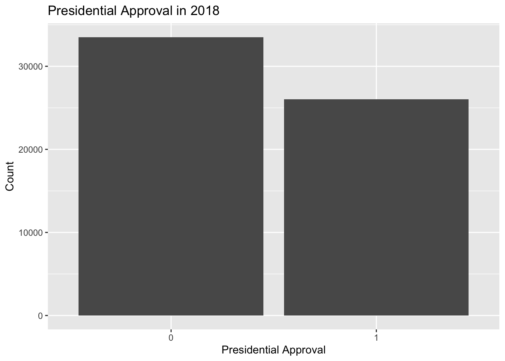
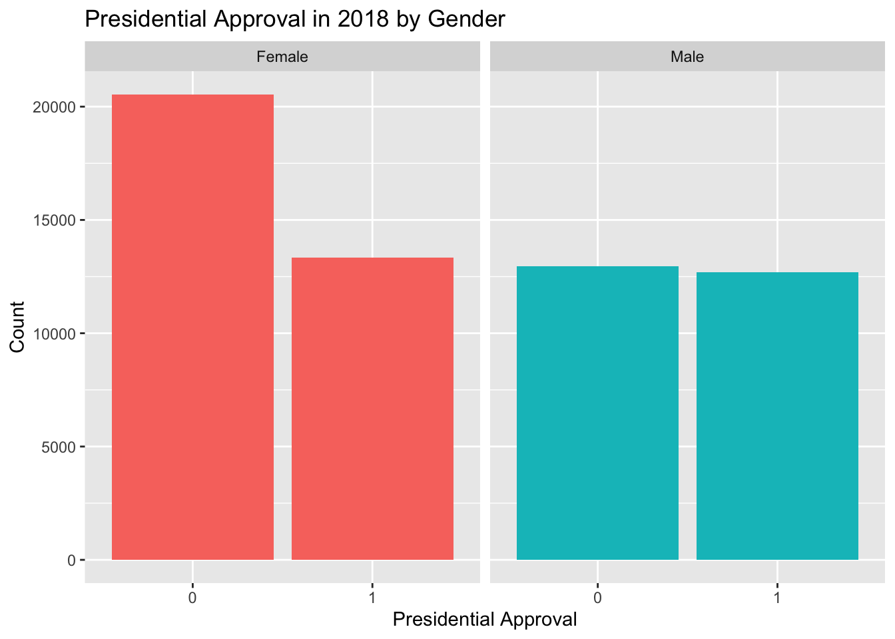
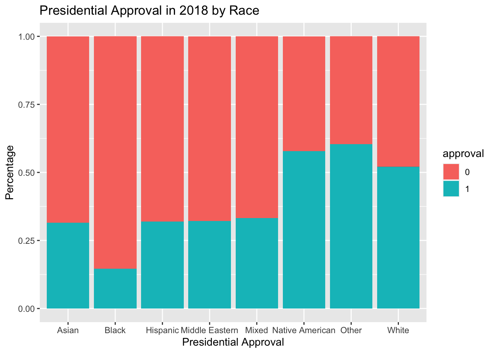

Packages:
Binary responses take on only two values: success (\(Y=1\)) or failure (\(Y=0\)), yes (\(Y=1\)) or no (\(Y=0\)), et cetera. Binary responses are one of the most common types of data that statisticians encounter. We are often interested in modeling the probability of success, \(p\), based on a set of covariates. As with regression, there are two broad categories of problems: modeling for prediction and modeling for causation. Although terminology varies across fields, “regression” is generally used for situations in which our dependent variable is continuous, as in Chapter 11. “Classification” applies to cases in which the dependent variable takes on discrete values, the simplest of which is the binary case.
In this chapter, we will look at three common techniques of classification of binary data. First, we will consider logistic regression. Second, we will consider classification and regression trees (CART). Third, we will discuss random forests. We use the tidymodels tools for all examples. At the end, we will compare the performances of all three models.
Recall the discussion in Chapter 10 about how to measure model accuracy. Classification models require different measures than those we used in Chapter 11 when considering continuous outcome measures.
The modeldata package contains example predictions from a test data set with two classes (“Class1” and “Class2”):
## 'data.frame': 500 obs. of 4 variables:
## $ truth : Factor w/ 2 levels "Class1","Class2": 2 1 2 1 2 1 1 1 2 2 ...
## $ Class1 : num 0.00359 0.67862 0.11089 0.73516 0.01624 ...
## $ Class2 : num 0.996 0.321 0.889 0.265 0.984 ...
## $ predicted: Factor w/ 2 levels "Class1","Class2": 2 1 2 1 2 1 1 1 2 2 ...The second and third columns are the predicted class probabilities for the test set while predicted are the discrete predictions.
For the hard class predictions, there are a variety of yardstick functions that are helpful:
## Truth
## Prediction Class1 Class2
## Class1 227 50
## Class2 31 192## # A tibble: 1 x 3
## .metric .estimator .estimate
## <chr> <chr> <dbl>
## 1 accuracy binary 0.838## # A tibble: 1 x 3
## .metric .estimator .estimate
## <chr> <chr> <dbl>
## 1 mcc binary 0.677## # A tibble: 1 x 3
## .metric .estimator .estimate
## <chr> <chr> <dbl>
## 1 f_meas binary 0.849For binary classification data sets, these functions have a standard argument called event_level. The default is that the first level of the outcome factor is the event of interest.
There is some heterogeneity in R functions in this regard; some use the first level and others the second to denote the event of interest. We consider it more intuitive that the first level is the most important. The second level logic is borne of encoding the outcome as 0/1 (in which case the second value is the event) and unfortunately remains in some packages. However, tidymodels (along with many other R packages) require a categorical outcome to be encoded as a factor and, for this reason, the legacy justification for the second level as the event becomes irrelevant.
As an example where the second class is the event:
## # A tibble: 1 x 3
## .metric .estimator .estimate
## <chr> <chr> <dbl>
## 1 f_meas binary 0.826In the output above, the .estimator value of “binary” indicates that the standard formula for binary classes will be used.
There are numerous classification metrics that use the predicted probabilities as inputs rather than the hard class predictions. For example, the receiver operating characteristic (ROC) curve computes the sensitivity and specificity over a continuum of different event thresholds. The predicted class column is not used. There are two yardstick functions for this method: roc_curve() computes the data points that make up the ROC curve and roc_auc() computes the area under the curve.
The interfaces to these types of metric functions use the ... argument placeholder to pass in the appropriate class probability column. For two-class problems, the probability column for the event of interest is passed into the function:
## # A tibble: 502 x 3
## .threshold specificity sensitivity
## <dbl> <dbl> <dbl>
## 1 -Inf 0 1
## 2 1.79e-7 0 1
## 3 4.50e-6 0.00413 1
## 4 5.81e-6 0.00826 1
## 5 5.92e-6 0.0124 1
## 6 1.22e-5 0.0165 1
## 7 1.40e-5 0.0207 1
## 8 1.43e-5 0.0248 1
## 9 2.38e-5 0.0289 1
## 10 3.30e-5 0.0331 1
## # … with 492 more rows## # A tibble: 1 x 3
## .metric .estimator .estimate
## <chr> <chr> <dbl>
## 1 roc_auc binary 0.939The two_class_curve object can be used in a ggplot call to visualize the curve. There is an autoplot() method that will take care of the details:

There are a number of other functions that use probability estimates, including gain_curve(), lift_curve(), and pr_curve().
Begin with our usual libraries:
Before we start modeling, let’s perform some exploratory analysis on the dataset we’ll be working with, cces. Cces stands for the Cooperative Congressional Election Study, a study regarding the approval rating of individual voters to their sitting president. Each row captures one voter, some of their demographic information, and how highly they approve (or disaprprove) of the president.
## Rows: 452,755
## Columns: 12
## $ year <int> 2006, 2006, 2006, 2006, 2006, 2006, 2006, 2006, 2006, 200…
## $ state <chr> "North Carolina", "Ohio", "New Jersey", "Illinois", "New …
## $ gender <chr> "Female", "Male", "Female", "Female", "Male", "Female", "…
## $ age <int> 32, 49, 54, 34, 20, 27, 47, 20, 77, 19, 53, 55, 38, 72, 4…
## $ race <chr> "White", "White", "White", "Black", "White", "White", "Wh…
## $ marstat <chr> "Divorced", "Married", "Divorced", "Single / Never Marrie…
## $ ideology <fct> Liberal, Moderate, Liberal, Liberal, Liberal, Liberal, Co…
## $ education <fct> High School Graduate, Post-Grad, High School Graduate, 4-…
## $ news <chr> NA, NA, NA, NA, NA, NA, NA, NA, NA, NA, NA, NA, NA, NA, N…
## $ econ <chr> "Gotten Worse / Somewhat Worse", "Gotten Much Worse", "Go…
## $ approval_ch <chr> "Strongly Disapprove", "Strongly Disapprove", "Strongly D…
## $ approval <dbl> 1, 1, 1, 1, 1, 1, 5, 1, 1, 2, 4, 1, 4, 5, 1, 1, 1, 3, 1, …We will tweak the data by only looking at observations recorded in the year 2018 so that all the responses are about the same president. We’ll also select the variables that are currently of interest to us. Finally, because this chapter will be dealing with logistic regressions, we want to convert the numeric approval variable into a binary variable. approval is a numeric variable from 1-5 with 5 representing the highest approval of the president. In order to do this, we have to turn approval into a binary variable. 1-2 will be coded to 0 to signify disapproval and 3-5 will be coded to 1 for approval. We will also cast approval as a factor variable rather than a number, which is useful information for models.
ch12 <- cces %>%
filter(year == 2018) %>%
select(state, age, gender, race, education, ideology, approval) %>%
mutate(approval = as.factor(case_when(
approval == 1 ~ 0,
approval == 2 ~ 0,
approval == 3 ~ 1,
approval == 4 ~ 1,
approval == 5 ~ 1)))From this, we can gather that there are 16 variables. Notably, there are 60,000 observations even after filtering only for the year 2018.
Let’s also display a random sample of 5 rows of the 60,000 rows.
## # A tibble: 5 x 7
## state age gender race education ideology approval
## <chr> <int> <chr> <chr> <fct> <fct> <fct>
## 1 South Carolina 61 Female White High School Gradu… Not Sure 1
## 2 Arizona 68 Female White High School Gradu… Very Liberal 1
## 3 Florida 77 Male White 2-Year Very Conservati… 1
## 4 Maryland 40 Male White 4-Year Very Conservati… 1
## 5 Florida 56 Female White 4-Year Moderate 0Now, let’s compute summary statistics. Let’s use the skim() function from the skimr package.
TABLE 12.1: Data summary
| Name | Piped data |
| Number of rows | 60000 |
| Number of columns | 7 |
| _______________________ | |
| Column type frequency: | |
| character | 3 |
| factor | 3 |
| numeric | 1 |
| ________________________ | |
| Group variables | None |
Variable type: character
| skim_variable | n_missing | complete_rate | min | max | empty | n_unique | whitespace |
|---|---|---|---|---|---|---|---|
| state | 0 | 1 | 4 | 20 | 0 | 51 | 0 |
| gender | 0 | 1 | 4 | 6 | 0 | 2 | 0 |
| race | 0 | 1 | 5 | 15 | 0 | 8 | 0 |
Variable type: factor
| skim_variable | n_missing | complete_rate | ordered | n_unique | top_counts |
|---|---|---|---|---|---|
| education | 0 | 1.00 | FALSE | 6 | Hig: 16617, 4-Y: 14256, Som: 12631, Pos: 8316 |
| ideology | 419 | 0.99 | FALSE | 6 | Mod: 17302, Con: 12052, Lib: 10929, Ver: 7434 |
| approval | 33 | 1.00 | FALSE | 2 | 0: 33743, 1: 26224 |
Variable type: numeric
| skim_variable | n_missing | complete_rate | mean | sd | p0 | p25 | p50 | p75 | p100 | hist |
|---|---|---|---|---|---|---|---|---|---|---|
| age | 0 | 1 | 48 | 18 | 18 | 32 | 48 | 62 | 95 | ▇▇▇▅▁ |
You’ll notice that we are missing data for our ideology and approval variables. The complete_rate column tells us that approval has 3% missing observations and ideology has 0.7% missing observations. Let’s use the function drop_na() to get rid of these missing observations so they don’t interfere with our models later in the chapter:
ch12 <- cces %>%
filter(year == 2018) %>%
select(state, age, gender, race, education, ideology, approval) %>%
mutate(approval = as.factor(case_when(
approval == 1 ~ 0,
approval == 2 ~ 0,
approval == 3 ~ 1,
approval == 4 ~ 1,
approval == 5 ~ 1))) %>%
drop_na()To complete our exploratory data analysis, let’s create some data visualizations.
The primary response variable left in our dataset is approval, a (newly) binary variable with 0 representing disapproval of the President and 1 representing approval. So, let’s start by looking at the overall distribution of approval.
ch12 %>%
ggplot(aes(x = approval)) +
geom_bar() +
labs(y = "Count",
x = "Presidential Approval",
title = "Presidential Approval in 2018") 
According to this graph, there are roughly 10,000 more voters who disapprove of Trump. To make things more interesting, let’s look at approval across gender and then race.
ch12 %>%
ggplot(aes(x = approval, fill = gender)) +
geom_bar() +
labs(y = "Count",
x = "Presidential Approval",
title = "Presidential Approval in 2018 by Gender") +
facet_wrap(~ gender) +
theme(legend.position = "none")
It seems that females have higher rates of disapproval of the President than males have.
ch12 %>%
ggplot(aes(fill = approval, x = race, y = age)) +
geom_bar(position="fill", stat="identity") +
labs(y = "Percentage",
x = "Presidential Approval",
title = "Presidential Approval in 2018 by Race")
This segmented bar graph shows us the percentage of each race that approved of the president. We can see that the disapproving majority in the overall data is present across most races.
Now, let’s use our state variable. Let’s create a scatterplot with approval to see how the rate of approval varied across states.
ch12 %>%
mutate(approval = as.integer(approval)) %>%
mutate(approval = case_when(
approval == 1 ~ 0,
approval == 2 ~ 1)) %>%
group_by(state) %>%
summarise(avg_approval = sum(approval)/n()) %>%
ggplot(aes(x = avg_approval, y = reorder(state, avg_approval))) +
geom_point() +
labs(y = "State",
x = "Approval Rate of President",
title = "Presidential Approval by State")Let’s now complete the first step for a proper data science project. We will split our data set into training and testing samples, then create cross-validations from the training data.
set.seed(10)
ch12_split <- initial_split(ch12, prob = 0.80)
ch12_train <- training(ch12_split)
ch12_test <- testing(ch12_split)
ch12_folds <- vfold_cv(ch12_train, v = 10)We can now use the split data to explore different models.
Now that we know our dataset a little better, let’s begin our first way of modeling binary/discrete data: logistic regressions.
Figure 12.1 illustrates a data set with a binary (0 or 1) response (\(Y\)) and a single continuous predictor (\(X\)). The blue line is a linear regression to model the probability of a success (\(Y=1\)) for a given value of \(X\). With a binary response, the linear regression has an obvious problem: it can produce predicted probabilities below 0 and above 1. Probabilities can only range from 0 up to and including 1 as these represent a 0% and 100% chance of an event happening, respectively.
The red curve is the logistic regression curve. Note that its characteristic “S” shape always produces predicted probabilities between 0 and 1. Here is the formula for a logistic regression:
Where \(p\) is the probability of a “yes” or “success” for a given set of predictors \(X\).
FIGURE 12.1: Linear vs. logistic regression models for binary response data.
The mathematical function \(log\left(\frac{p}{1 - p}\right)\) is called the logit function and it transforms variables from the space \((0, 1)\) (like probabilities) to \((-\infty, \infty)\). The inverse of that function, the standard logistic function, is \(\frac{1}{1 + e^{-x}}\) and transforms variables from the space \((-\infty, \infty)\) to \((0, 1)\). From that latter function’s name we get the terminology of logistic regression.
The process begins with the creation of a workflow object with our model engine.
glm_wfl <- workflow() %>%
add_model(logistic_reg() %>%
set_engine("glm") %>%
set_mode("classification"))Add a recipe.
glm_wfl <- workflow() %>%
add_model(logistic_reg() %>%
set_engine("glm") %>%
set_mode("classification")) %>%
add_recipe(recipe(approval ~ age + gender + race,
data = ch12_train) %>%
step_dummy(gender, race) %>%
step_interact(~age:starts_with("race_"))
)Examine performance on the cross-validation samples.
## # A tibble: 2 x 5
## .metric .estimator mean n std_err
## <chr> <chr> <dbl> <int> <dbl>
## 1 accuracy binary 0.606 10 0.00254
## 2 roc_auc binary 0.651 10 0.00283Check the predictions against the actual values.
glm_wfl %>%
fit(data = ch12_train) %>%
predict(new_data = ch12_train) %>%
bind_cols(ch12_train %>% select(approval)) %>%
ggplot(aes(y = approval, x = `.pred_class`)) +
geom_jitter(height = 0.2, alpha = 0.01) +
labs(title = "Predicting Approval",
subtitle = "Using demographic predictors",
x = "Predicted Approval",
y = "Approval"
)Logistic regression is just one of many methods we can use to model binary responses. CART is another approach, which we’ll learn about in this section.
A tree is basically a flow chart of yes or no questions. The general idea of the methods we are describing is to define an algorithm that uses data to create these trees with predictions at the ends, referred to as nodes. Decision trees predict an outcome variable \(Y\) by partitioning the predictors.
Classification trees, or decision trees, are used in prediction problems where the outcome is categorical. When the outcome is numerical, they are called regression trees; hence the acronym CART, standing for Classification and Regression Trees. The general idea here is to build a decision tree and, at the end of each node, obtain a predictor \(\hat{y}\). In this case, \(\hat{y}\) would identify the likelihood of a voter in that node approving of the President.
But how do we decide on which partitions to make (\(R_1, R_2, \ldots, R_J\)) and how do we choose \(J\), the total number of partitions? Here is where the algorithm gets a bit complicated.
Classification trees create partitions recursively. We start the algorithm with one partition in which every observation is classified as either 0 or 1. But after the first step we will have two partitions. After the second step we will split one of these partitions into two and will have three partitions, then four, then five, and so on.
Now, after we define the new partitions \(R_1\) and \(R_2\), and we decide to stop the partitioning process, we compute predictors by taking the most common category of all the observations \(y\) for which the associated \(\mathbf{x}\) is in \(R_1\) and \(R_2\). We refer to these two as \(\hat{y}_{R_1}\) and \(\hat{y}_{R_2}\) respectively.
Once we are done partitioning the predictor space into regions, in each region a prediction is made using the observations in that region.
Classification trees have certain advantages that make them very useful. They are highly interpretable, even more so than linear models. They are easy to visualize (if small enough). Finally, they can model human decision processes. However, in terms of accuracy, they are rarely the best performing method since they are not very flexible. Random forests, explained in the next section, improve on some of the shortcomings of classification trees.
One limitation of CART is its lack of fitted values. Unlike a glm(), you can’t clean predicted probabilities or point estimates from CART. Rather, you simply get a prediction of 0 or 1 for whatever observation you pass through the tree.
First create a workflow object with our model engine.
cart_wfl <- workflow() %>%
add_model(decision_tree() %>%
set_engine("rpart",
model = TRUE) %>%
set_mode("classification"))Add a recipe.
cart_wfl <- workflow() %>%
add_model(decision_tree() %>%
set_engine("rpart",
model = TRUE) %>%
set_mode("classification")) %>%
add_recipe(recipe(approval ~ age + gender + race,
data = ch12_train) %>%
step_dummy(gender, race) %>%
step_interact(~age:starts_with("race_") )
)Examine performance on the cross-validation samples.
cart_metrics <- cart_wfl %>%
fit_resamples(resamples = ch12_folds) %>%
collect_metrics()
cart_metrics## # A tibble: 2 x 5
## .metric .estimator mean n std_err
## <chr> <chr> <dbl> <int> <dbl>
## 1 accuracy binary 0.607 10 0.00293
## 2 roc_auc binary 0.612 10 0.00348Check the predictions against the actual values.
cart_wfl %>%
fit(data = ch12_train) %>%
predict(new_data = ch12_train) %>%
bind_cols(ch12_train %>% select(approval)) %>%
ggplot(aes(y = approval, x = `.pred_class`)) +
geom_jitter(height = 0.2, alpha = 0.01) +
labs(title = "Predicting Approval",
subtitle = "Using demographic predictors",
x = "Predicted Approval",
y = "Approval"
)Random forests are a very popular machine learning approach that addresses the shortcomings of decision trees using a clever idea. The goal is to improve prediction performance and reduce instability by averaging multiple decision trees (a forest of trees constructed with randomness). It has two features that help accomplish this.
The first step is bootstrap aggregation or bagging. The general idea is to generate many predictors, each using classification trees, and then forming a final prediction based on the average prediction of all these trees. To assure that the individual trees are not the same, we use the bootstrap to induce randomness. These two features combined explain the name: the bootstrap makes the individual trees randomly different, and the combination of trees is the forest. The specific steps are as follows.
Build decision trees using a portion of the data called the training set. We refer to the fitted models as \(T_1, T_2, \dots, T_B\). We later explain how we ensure they are different.
For every observation in the test set, form a prediction \(\hat{y}_j\) using tree \(T_j\).
For categorical data classification, predict \(\hat{y}\) with majority vote (most frequent class among \(\hat{y}_1, \dots, \hat{y}_T\)).
So how do we get different decision trees from a single training set? For this, we use randomness in two ways which we explain in the steps below. Let \(N\) be the number of observations in the training set. To create \(T_j, \, j=1,\ldots,B\) from the training set we do the following:
Create a bootstrap training set by sampling \(N\) observations from the training set with replacement. This is the first way to induce randomness.
A large number of features is typical in machine learning challenges. Often, many features can be informative but including them all in the model may result in overfitting. The second way random forests induce randomness is by randomly selecting features to be included in the building of each tree. A different random subset is selected for each tree. This reduces correlation between trees in the forest, thereby improving prediction accuracy.
First create a workflow object with our model engine.
rf_wfl <-workflow() %>%
add_model(rand_forest() %>%
set_engine("randomForest") %>%
set_mode("classification"))Add a recipe.
rf_wfl <- workflow() %>%
add_model(rand_forest() %>%
set_engine("randomForest") %>%
set_mode("classification")) %>%
add_recipe(recipe(approval ~ age + gender + race,
data = ch12_train) %>%
step_dummy(gender, race) %>%
step_interact(~age:starts_with("race_") )
)Examine performance on the cross-validation samples.
## # A tibble: 2 x 5
## .metric .estimator mean n std_err
## <chr> <chr> <dbl> <int> <dbl>
## 1 accuracy binary 0.609 10 0.00255
## 2 roc_auc binary 0.651 10 0.00228Check the predictions against the actual values.
rf_wfl %>%
fit(data = ch12_train) %>%
predict(new_data = ch12_train) %>%
bind_cols(ch12_train %>% select(approval)) %>%
ggplot(aes(y = approval, x = `.pred_class`)) +
geom_jitter(height = 0.2, alpha = 0.01) +
labs(title = "Predicting Approval",
subtitle = "Using demographic predictors",
x = "Predicted Approval",
y = "Approval"
)Recall that the most common method for deciding which model to choose is to look at which one does the best predicting out of sample. Below is a summary of how well our three different models performed.
tibble(model = rep(c("Logistic Regression",
"Classification and Regression Tree",
"Random Forest"), each = 2)) %>%
bind_cols(bind_rows(glm_metrics, cart_metrics, rf_metrics)) ## # A tibble: 6 x 6
## model .metric .estimator mean n std_err
## <chr> <chr> <chr> <dbl> <int> <dbl>
## 1 Logistic Regression accuracy binary 0.606 10 0.00254
## 2 Logistic Regression roc_auc binary 0.651 10 0.00283
## 3 Classification and Regression Tree accuracy binary 0.607 10 0.00293
## 4 Classification and Regression Tree roc_auc binary 0.612 10 0.00348
## 5 Random Forest accuracy binary 0.609 10 0.00255
## 6 Random Forest roc_auc binary 0.651 10 0.00228Page built: 2020-11-13